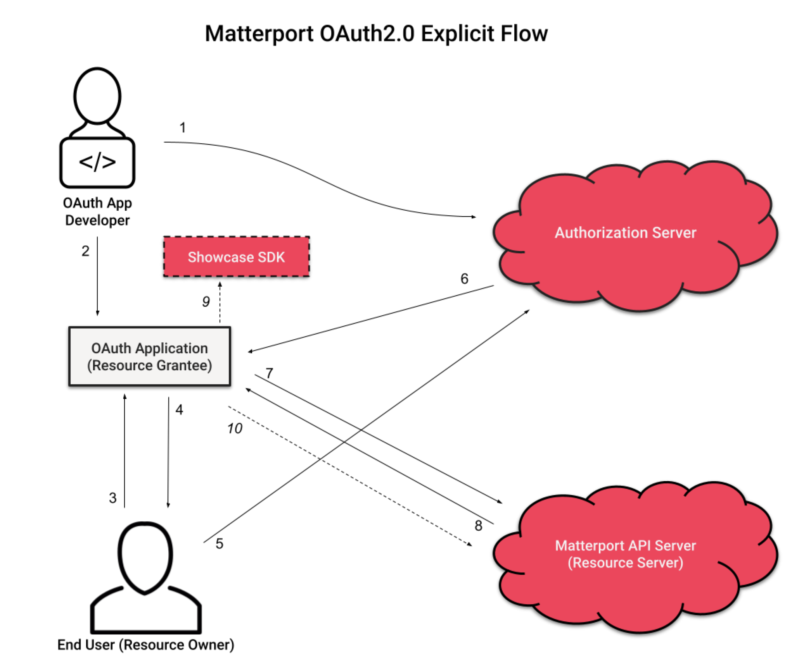
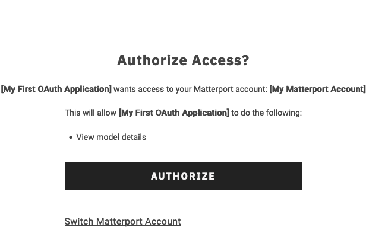

Introduction
In this section, we’ll cover implementing OAuth within your third party application.
Please refer to our overview for gaining access to and setting up your first OAuth Application.
OAuth Implementation Workflow
On a high level, OAuth workflow for the application developer is the following:

- The OAuth app developer registers their app with Matterport and configures a redirect URI and Scopes.
- The OAuth app developer uses a generated Client ID and Client Secret in the OAuth app.
- The user accesses a 3rd Party Application and is presented with the option to ‘Connect to Matterport.’
- The end user clicks to open an authorization screen hosted on the Matterport Authorization Server in a modal window.
- The end user authorizes the app to access their data by providing their Matterport username and password to the Matterport Authorization Server.
- The Matterport Authorization Server provides an authorization code and refresh token to the redirect URI and the modal window closes.
- The OAuth Application Redirect Page uses the authorization code to acquire an initial access token and a refresh token with a 30 day expiration.
- The OAuth Application receives the access token and expiration time. The
refresh_tokenremains stored on the server side. Subsequent access tokens can be acquired using the refresh token on the OAuth Application Server, without end user input. - Potential Use: The OAuth Application uses the access token as a Bearer Token to display private models.
- Potential Use: The OAuth Application can then use the access token to authenticate API calls.
Refresh Token rotation is a standard part of OAuth. For more information on refresh_token rotation, please see RFC6749 from the OAuth Spec
Authorization Flow Guide
The user will need to be redirected to Matterport’s authorization page to log in and, if they have more than one Matterport account, to select which account to use with your application.
The authorization URL is: https://authn.matterport.com/oauth/authorize
Authorization Query Parameters
| Parameter | Required? | Value |
| client_id | Yes | ClientID - The client ID for your application. |
| response_type | Yes | code - Return an Authorization Code. token - Return an access_token (for implicit flow OAuth applications only) |
| redirect_uri | No | url - The Redirect URL configured for the OAuth application. If included in the authorization request it must also be included in the access token request. |
| scope | Yes | A space-delimited list of OAuth Scopes the applications is requesting. All of the scopes requested must be configured for the OAuth application. |
Example: https://authn.matterport.com/oauth/authorize?client_id=uud3wfustchhap01yzia7nddb&response_type=code&scope=ViewDetails%20ViewPrivate&redirect_uri=https://myoauthapp.test
The user will then be presented with the opportunity to view the scopes requested and decide whether they want to authorize the application.

Authorization Code Grant
If the user agrees to authorize the application, they will be redirected back to the application and the URL will contain the authorization information requested.
For an authorization code, the redirect might look something like this: https://myoauthapp.test?code=wdi42eyt7pugyxze3i9ushz5d
The value of the code query parameter is the authorization code, which will be used in the next step to get an access token and a refresh token.
Retrieve an Access Token Using an Authorization Code
After the user has authorized the application, and an authorization code has been sent to the redirect_uri, the application can request an access token from the API via a server-side script API request.
To request a token, make a HTTP POST request with a Content-Type of application/x-www-form-urlencoded to the token URL endpoint: https://api.matterport.com/api/oauth/token
Post Body Fields
| Key | Required? | Value |
grant_type |
Yes | authorization_code |
code |
Yes | The authorization code received when the user authorized the application. |
scope |
Yes | A space-delimited list of OAuth scopes being requested. This should match with what the user authorized. |
client_id |
Yes | The client ID. |
client_secret |
Yes | The client secret. |
redirect_uri |
No* | The Redirect URL configured in the OAuth app. *Required if it was included in the authorization request. |
expires_in |
No | Duration expression 15m, 60s, etc. Optionally set the expiration of the returned token. Duration is maxed to the app’s configured token expiration time. |
Sample Response:
{
"access_token": "3mwbyppm4u0gz1z14ktqtiteb",
"token_type": "Bearer",
"expires_in": 3599,
"refresh_token": "ichxdbm59z74m6tkcbqi092rc"
}
The access_token value should then be used to access the Matterport API directly, in the Authorization header, using the standard OAuth format of “Authorization: Bearer <token>”.
The refresh_token value can be used to request a new access token when the expiration time is near By default, refresh tokens are valid for 30 days.
The expires_in value indicates how long the access token is valid in seconds. By default, this is 1 day.
Your application should store these values along with the current time so that your application can know when the token will expire.
The access_token must be transmitted securely, but is safe to use in trusted remote applications, such as browsers or mobile apps.
Retrieve a New Access Token Using a Refresh Token
To request a new access token, make a server-side HTTP POST request with a Content-Type of application/x-www-form-urlencoded to: https://api.matterport.com/api/oauth/token
| Key | Value |
grant_type |
refresh_token |
refresh_token |
The refresh token generated using the authorization code in the previous step. |
client_id |
The client ID. |
client_secret |
The client secret. |
Sample Response:
{
"access_token": "r3gxncgp4xksmdtectyzw1s8c",
"token_type": "Bearer",
"expires_in": 3599
}
Refresh Token Rotation
While your refresh_token is valid for 30 days, after 24 hours, it will become stale. After 24 hours, the next request for a new access_token will also return a new refresh_token.
Please be sure to pay attention to the returned refresh_token. Make sure to capture this new value for subsequent access_token refreshes.
Refresh Token rotation is a standard part of OAuth. For more information on refresh_token rotation, please see RFC6749 from the OAuth Spec
Refresh Token Revocation
The Matterport user who granted access or any administrators for the organization that access was granted to can revoke access at any time, in which case any active tokens will expire and the refresh token will no longer be allowed to generate new access tokens.
In this case, the request to generate a new access token using the revoked refresh token will return an invalid_grant error. The server should discard this refresh token and can prompt the user with a new authorization code flow to attempt to regain access.
Sample response (HTTP 400):
{
"error": "invalid_grant"
}